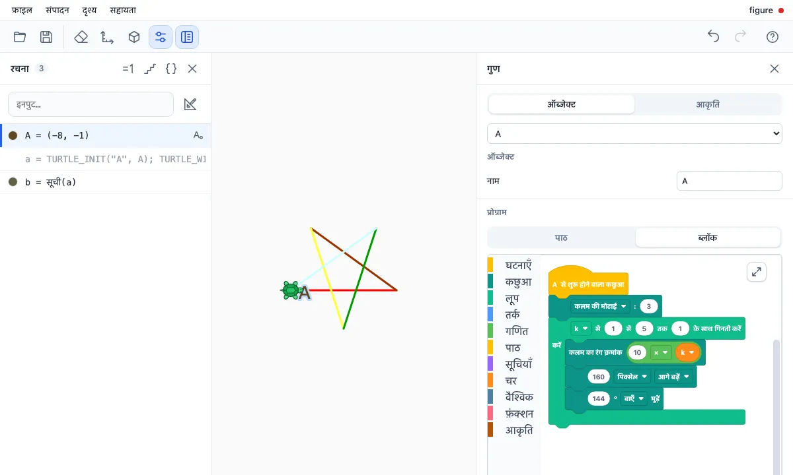

व्यंजक और स्लाइडर
व्यंजक
हर वह पंक्ति जो न बिन्दु है न कमांड, एक व्यंजक बनाती है, जो ऊपर बाईं ओर दो दशमलव स्थानों के साथ दिखता है। उसका प्रकार पाठ से तय होता है:
| पंक्ति | प्रकार |
|---|---|
a = 3,
list = [1, 2, 3]
|
अचर |
t = "नमस्ते" |
पाठ |
f = 0.5x^2 - 4 |
x (y, z, t) का फलन; f(2) उसे बुलाता
है, f'(2) उसके अवकलज को
|
f(x) = ax^2 + bx + c |
फलन का वक्र, खींचा हुआ: ax को a x
पढ़ा जाता है, स्लाइडर a, b, c बनते हैं;
f(2) भी उसे बुलाता है
|
E = d(A, B) |
माप, आकृति हिलने पर फिर से परिकलित |
u = "AB = " + round(d(A, B)*100)/100
|
परिकलित पाठ |
सूत्र में, बिन्दु का मान उसके निर्देशांक, रेखाखण्ड का उसकी लंबाई, वृत्त का उसकी त्रिज्या, बहुभुज का उसका क्षेत्रफल, कोण का उसका माप होता है। पूरी वाक्य-रचना: सूत्र और प्रोग्राम।
व्यंजक उसके पाठ को खींचकर खिसकाया जाता है; किसी बिन्दु से जुड़ा हो तो वह उसके साथ चलता है। उसे छूने से वह चुना जाता है, या इनपुट के दौरान उसका नाम लिखा जाता है।
स्लाइडर
r = स्लाइडर(0, 5, 2): 0 से 5 तक, मान 2। सीमाएँ
व्यंजक या सूत्र हो सकती हैं (स्लाइडर(0, d(A, B), 1))। चरण, लंबाई, दिशा, हैंडल और एनीमेशन
गुणों में तय होते हैं।
r = 5 उसे फिर से अचर बना देता है।
छोटे अक्षर से शुरू होने वाला अज्ञात नाम −5 से 5 तक का स्लाइडर
बनाता है, चरण 0.1 और मान 1: A = (a, 4),
d = y = m x + p। यूनानी अक्षर 0 से 360° तक का कोण
बनाता है, चरण 1° और मान 45° (रेडियन में 0 से 2π):
P = (3; α)। अस्वीकृत पंक्ति अपने स्लाइडर नहीं रखती।
परिकलित बिन्दु
-
M = (x(B) + 1, y(A)): सूत्रों से दिए गए निर्देशांक। -
N = बिन्दु(2*B - A): ऐसा सूत्र जिसका मान एक बिन्दु है। -
P = (3; 60°): ध्रुवीय निर्देशांक, त्रिज्या और कोण।
जब किसी पंक्ति name = formula का मान एक बिन्दु या
बिन्दुओं की सूची हो, तो पंक्ति के अंत में बटन
बिंदु,
बिंदुओं की सूची,
रेखाखंडों की सूची या
व्यंजक सुझाते हैं।
Enter चमकता हुआ बटन लेता है: बड़े अक्षर वाले नाम के
लिए बिन्दु या सूची, अन्यथा व्यंजक। इसीलिए
list = [1, 2, 3], न कि L = [1, 2, 3],
जिसे त्रिविम बिन्दु पढ़ा जाएगा।
बिन्दुओं की सूचियाँ
q = सूची(pts) व्यंजक pts के बिन्दु
खींचता है; कोई अपरिभाषित बिन्दु रेखा तोड़ देता है। चुना गया
व्यंजक जिसका मान बिन्दुओं की सूची हो, संदर्भ क्षेत्र में भी
और
सुझाता है (और बिन्दु मान के लिए
): पंक्ति लिखी जाती है और व्यंजक
छिप जाता है।
अनुक्रम
L = अनुक्रम((k, k^2), k, -2, 2) k के −2 से 2 तक, 1
के अंतराल पर, बिंदु (k, k²) रखता है; पाँचवाँ तर्क दूसरा अंतराल
देता है। तत्व एक संख्या, रेखाखण्ड(P, Q),
रेखा(P, Q), वृत्त(O, r) या
बहुभुज(A, B, C, …) भी हो सकता है, जिनके तर्क k के
सूत्र हैं: अनुक्रम(वृत्त(A, k), k, 1, 3)।
एक अनुक्रम में दूसरा अनुक्रम हो सकता है, जिसकी सीमाएँ पहले का चर
पढ़ती हैं:
अनुक्रम(अनुक्रम((i, j), j, 1, i), i, 1, 4)। सूत्र
में बिंदुओं की सूची उसके नाम से पढ़ी जाती है, 0 से:
L[0], L[k-1], नेस्टेड अनुक्रमों के लिए
L[i][j], और तत्वों की संख्या के लिए
L.length। 2*i लिखें:
2i एक सम्मिश्र संख्या है।
प्रोग्राम
व्यंजक एक प्रोग्राम हो सकता है: ; से अलग किए गए
निर्देश, जिनमें अंतिम मान देता है; वह दूसरे ऑब्जेक्टों को
फ़ॉर्मेट कर सकता है (S1.setHidden(1))। भाषा:
सूत्र और प्रोग्राम।
- («रचना» पैनल का शीर्ष भाग) एक खाली प्रोग्राम खोलता है; बनाएँ या Ctrl Enter व्यंजक बनाता है।
- मौजूदा व्यंजक के लिए, गुणों का परिभाषा भाग पाठ को कई पंक्तियों में संपादित करता है: Enter इंडेंट बनाए रखता है, Tab इंडेंट करता है, } इंडेंट घटाता है, Ctrl Enter लागू करता है, Esc पुनर्स्थापित करता है, फ़ॉर्मेट करें धनु कोष्ठकों के अनुसार इंडेंट करता है।
- त्रुटि होने पर गलत पंक्ति या बिना जोड़ी वाला सीमांकक चुना जाता है।
ब्लॉक और कछुआ
प्रोग्राम ब्लॉकों से भी लिखा जा सकता है: परिभाषा भाग पाठ से ब्लॉक पर जाता है। ब्लॉक श्रेणियों (लूप, तर्क, गणित, पाठ, चर, वैश्विक, फ़ंक्शन, आकृति) से खींचे जाते हैं और प्रोग्राम ब्लॉक के नीचे जुड़ते हैं; लौटाएँ ब्लॉक मान देता है। हर बदलाव तुरंत लागू होता है और दूसरों की तरह पूर्ववत होता है। पाठ और ब्लॉक एक ही प्रोग्राम दिखाते हैं: चुनाव अगले प्रोग्रामों के लिए बना रहता है।
वैश्विक, जिन्हें आकृति के सभी प्रोग्राम साझा करते हैं, वैश्विक श्रेणी में वैश्विक बनाएँ… से बनते हैं; प्रोग्राम उन्हें सेट करता है, बढ़ाता है या पढ़ता है।
किसी बिंदु के संदर्भ क्षेत्र में कछुआ उस बिंदु से शुरू होने वाला कछुआ बनाता है और उसे ब्लॉकों में खोलता है। वह आगे बढ़ता है (पिक्सेल या इकाइयों में), मुड़ता है (अंशों में), कलम उठाता या रखता है, रंग और मोटाई बदलता है, भरता है, लिखता है, किसी बिंदु की ओर मुड़ता है या वहाँ जाता है। उसका चित्र, एक सूची, बिंदु और प्रोग्राम द्वारा पढ़ी गई वस्तुओं के साथ चलता है। जब तक उसका प्रोग्राम दिखाया जाता है, कछुआ वहीं बना दिखता है जहाँ वह रुकता है, अपनी दिशा की ओर मुड़ा हुआ (त्रिविमीय में एक तीर, जो हरा होता है जब उसकी पीठ आपकी ओर हो): जोड़ा गया हर ब्लॉक उसे आगे बढ़ते या मुड़ते दिखाता है।

DGPad आकृतियों के कछुए भी इसी तरह खुलते हैं: गुण पैनल खुला रखकर
“रचना” पैनल में उनकी blk_turtle_exp_… पंक्ति छुएँ।
जिस प्रोग्राम में बिना ब्लॉक वाला निर्देश हो, वह पाठ में ही रहता
है।
DGPad आकृतियों के बटन (एक लेबल और उसके बाद एक तीर) तीर को छूने पर अपना प्रोग्राम चलाते हैं। लेबल को छूने से बटन चुना जाता है, उसे खींचने से बटन खिसकता है; संदर्भ क्षेत्र में सेटिंग्स उसका प्रोग्राम ब्लॉकों में खोलता है। आकृति श्रेणी का … को … पर सेट करें ब्लॉक किसी व्यंजक का मान बदलता है।
कछुए और बटन टूल मेनू से भी बनते हैं,
प्रोग्राम परिवार:
कछुआ चुने गए बिंदु से चलता है (खाली जगह एक
बिंदु बनाती है),
बटन चुनी गई जगह पर रखा जाता है; दोनों तुरंत
अपना प्रोग्राम ब्लॉकों में खोलते हैं। इनपुट पंक्ति में टाइप करने
पर बटन("चलाएँ") दृश्य के केंद्र में एक बटन बनाता
है; «रचना» पैनल में उसकी पंक्ति उसका लेबल बदलती है।